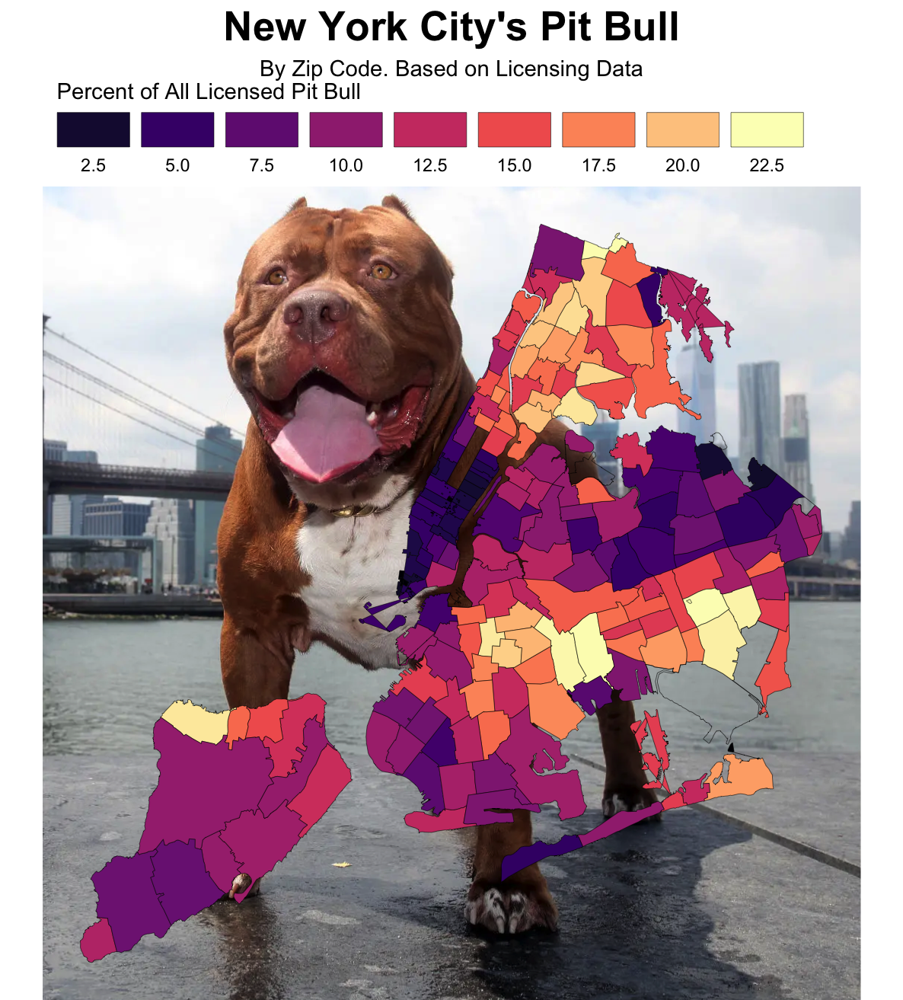

library(tidyverse)
library(ggtext)
library(ggthemes)
library(ggplot2)
library(viridis)NYC Dogs
Load Necessary Libraries
Loading The Data
nyc_dog_license <- read_csv(
'https://bcdanl.github.io/data/nyc_dog_license.csv')
print(nyc_dog_license)# A tibble: 222,328 × 9
animal_name animal_gender animal_birth_year breed_rc borough zip_code
<chr> <chr> <dbl> <chr> <chr> <dbl>
1 Paige F 2014 Pit Bull (or Mi… Manhat… 10035
2 Lola F 2009 Maltese Manhat… 10028
3 Chewbacca F 2012 Labrador (or Cr… Manhat… 10013
4 Lemmy F 2005 Yorkshire Terri… Manhat… 10003
5 Ricky M 2014 German Shepherd… Brookl… 11220
6 Murphy M 2012 Pit Bull (or Mi… Bronx 10463
7 Avery F 2014 Pit Bull (or Mi… Manhat… 10002
8 Bigs M 2004 Pit Bull (or Mi… Brookl… 11208
9 Bess F 2010 Beagle Brookl… 11218
10 Apple M 2013 Havanese Manhat… 10025
# ℹ 222,318 more rows
# ℹ 3 more variables: license_issued_date <date>, license_expired_date <date>,
# extract_year <dbl>nyc_zips_coord <- read_csv(
'https://bcdanl.github.io/data/nyc_zips_coord.csv')
print(nyc_zips_coord)# A tibble: 11,175 × 3
X Y objectid
<dbl> <dbl> <dbl>
1 -73.9 40.7 1
2 -73.9 40.7 1
3 -73.9 40.7 1
4 -73.9 40.7 1
5 -73.9 40.7 1
6 -73.9 40.8 1
7 -73.9 40.8 1
8 -73.9 40.8 1
9 -73.9 40.8 1
10 -73.9 40.8 1
# ℹ 11,165 more rowsnyc_zips_df <- read_csv(
'https://bcdanl.github.io/data/nyc_zips_df.csv')
print(nyc_zips_df)# A tibble: 262 × 11
objectid zip_code po_name state borough st_fips cty_fips bld_gpostal_code
<dbl> <dbl> <chr> <chr> <chr> <dbl> <chr> <dbl>
1 1 11372 Jackson He… NY Queens 36 081 0
2 2 11004 Glen Oaks NY Queens 36 081 0
3 3 11040 New Hyde P… NY Queens 36 081 0
4 4 11426 Bellerose NY Queens 36 081 0
5 5 11365 Fresh Mead… NY Queens 36 081 0
6 6 11373 Elmhurst NY Queens 36 081 0
7 7 11001 Floral Park NY Queens 36 081 0
8 8 11375 Forest Hil… NY Queens 36 081 0
9 9 11427 Queens Vil… NY Queens 36 081 0
10 10 11374 Rego Park NY Queens 36 081 0
# ℹ 252 more rows
# ℹ 3 more variables: shape_leng <dbl>, shape_area <dbl>, x_id <chr>Important Visualization
nyc_dog_license_cleaned <- nyc_dog_license %>%
filter(!is.na(breed_rc))
pit_bull_proportion <- nyc_dog_license_cleaned %>%
group_by(zip_code) %>%
summarise(
total_dogs = n(),
pitbull_dogs = sum(breed_rc == "Pit Bull (or Mix)"),
pitbull_proportion = (pitbull_dogs / total_dogs) * 100
)
merged_data <- nyc_zips_df %>%
left_join(pit_bull_proportion, by = "zip_code") %>%
left_join(nyc_zips_coord, by = "objectid")
x_percentile <- quantile(merged_data$X, 0.075, na.rm = TRUE)
y_percentile <- quantile(merged_data$Y, 0.60, na.rm = TRUE)
ggplot(merged_data, aes(x = X, y = Y, fill = pitbull_proportion)) +
annotate("richtext",
x = x_percentile,
y = y_percentile,
label = "<img src='https://bcdanl.github.io/lec_figs/pitbull.png' width='750'/>",
fill = NA,
color = NA,
) +
geom_polygon(aes(group = zip_code), color = "black", size = 0.1) +
scale_fill_viridis(name = "Percent of All Licensed Pit Bull", option = "magma", direction = 1, breaks = c(2.5, 5, 7.5, 10, 12.5, 15, 17.5, 20, 22.5), limits = c(0,22.5),
na.value = "transparent") +
coord_map(projection = "albers", lat0 = 39, lat1 = 45) +
labs(title = "New York City's Pit Bull", subtitle = "By Zip Code. Based on Licensing Data") +
theme_void() +
guides(fill = guide_legend(barwidth = 2.5, nrow = 1, label.position = "bottom")) +
theme(plot.title = element_text(hjust = 0.5, face = "bold", size = 20),
plot.subtitle = element_text(hjust = 0.5), size = 14,
legend.position = "top",
legend.justification = c(0.2,1),
legend.key.width = unit(2, "cm"),
legend.title.position = "top")
- Geographic Distribution: The map highlights variations in Licensed Pit Bull ownership across different zip codes. Darker areas indicate a lower percentage of licensed Pit Bulls, while lighter areas suggest a higher percentage.
Follow Up Question
- Which Zip Code has the highest proportion of Pit Bull (or Mix)?
max_proportion <- max(pit_bull_proportion$pitbull_proportion, na.rm = TRUE)
highest_proportion_zips <- pit_bull_proportion %>%
filter(pitbull_proportion == max_proportion)
print(highest_proportion_zips)# A tibble: 22 × 4
zip_code total_dogs pitbull_dogs pitbull_proportion
<dbl> <int> <int> <dbl>
1 1009 2 2 100
2 7065 1 1 100
3 8527 1 1 100
4 8721 2 2 100
5 10520 2 2 100
6 10536 1 1 100
7 11381 2 2 100
8 12010 1 1 100
9 12775 2 2 100
10 13032 1 1 100
# ℹ 12 more rows- There are 22 zip codes that all are tied for the highest proportion of Pit Bull (or Mix), the zip code that is shown at the top is 1009.